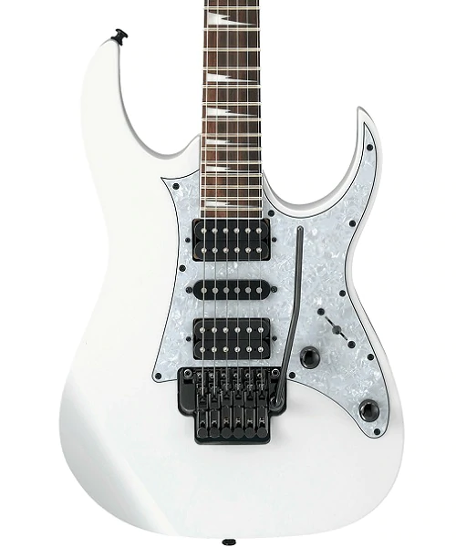
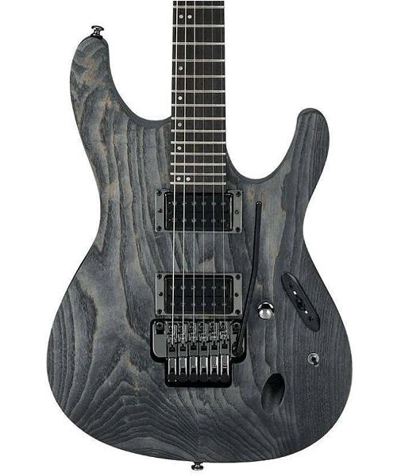
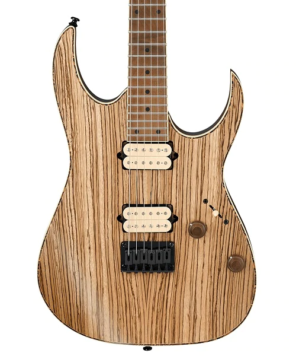
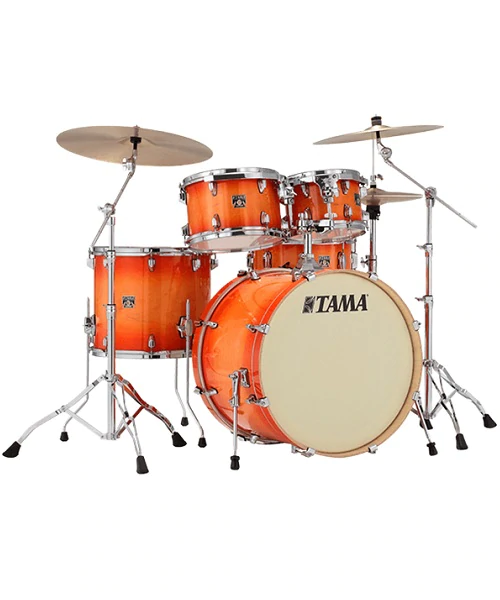
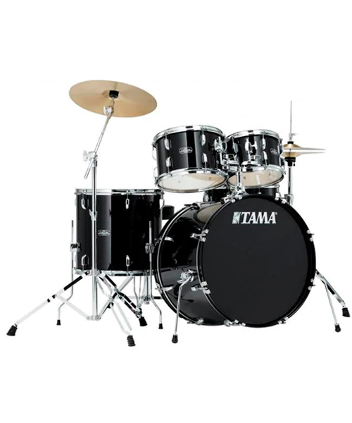
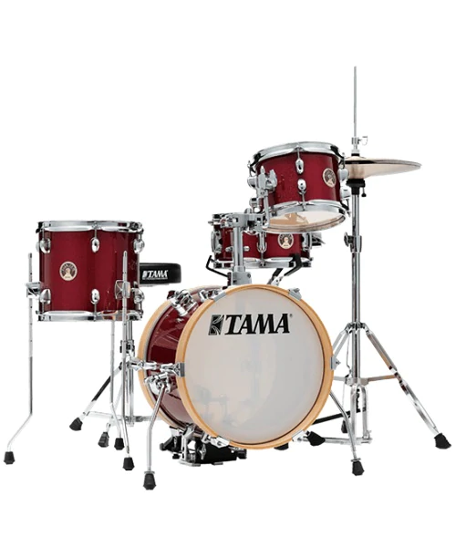
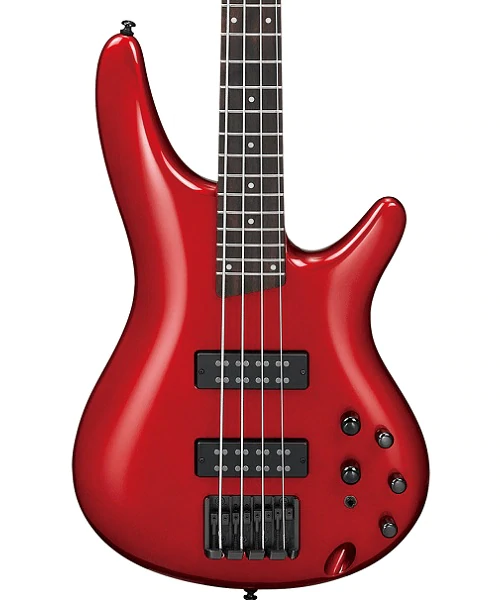
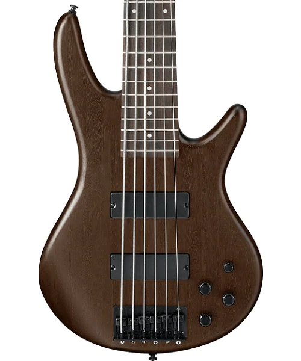
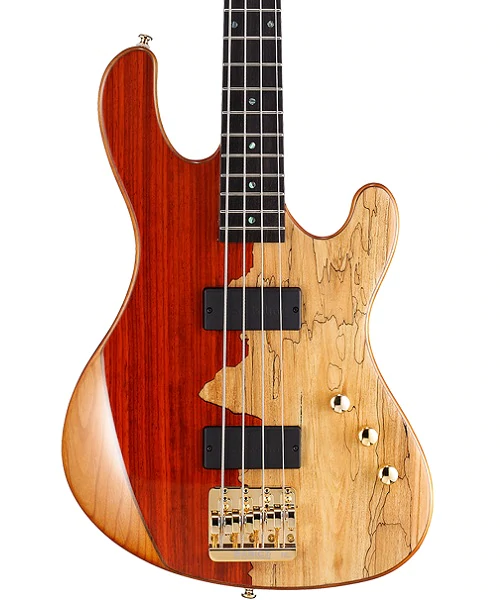

Guitarras

La guitarra eléctrica Ibanez RG350 lleva la serie RG aún más en la zona de metal.
Muchos músicos han seleccionado a la Ibanez RG como su arma de elección para desencadenar el caos sonoro de las masas metálicas.

Comfort y comodidad incomparables, combinada con la versatilidad, hacen de la PWM100 una guitarra verdaderamente única para intérpretes de cualquier estilo. Con su aspecto, tacto y sonido, este instrumento inspirará la creatividad en los años venideros.

Presenta un cuello de arce asado Wizard III y un diapasón de ébano Macassar. Estas maderas son de mayor densidad y superiores en la transmisión de vibraciones de cuerda al cuerpo de la guitarra. Cuando se combina con el cuerpo de Nyatoh, esta fusión de maderas le da al RG una apariencia extraordinaria y elegante.
Baterias

Batería serie Superstar Classic - acabado Tangerine Lacquer Burst - Bombo 22x16, tom 10x07, tom 12x08, base 16x14, caja 14x6,5 - cascos de arce de 6 capas (espesor 5 mm), bombo 8 capas (espesor 7 mm) - con sistema Star-Mount para el montaje del tom suspendido con posición regulabler y soporte MTH600 - acabado lacado - el kit de hardware HB5W o MM5WN se vende por separado

El nuevo set Stagestar entrega la misma calidad, durabilidad y sonido de la famosa serie Swingstar de Tama, pero en un tamaño mas compacto y portátil, perfecto para conciertos en lugares pequeños o ensayos. Set ideal para estudiantes que merecen dar sus primeros pasos en el mundo de la batería con un instrumento de gran calidad.

Batería serie Club-Jam Flyer 4 piezas - acabado Candy Apple Mist - Bombo 14x10 w/Lifter, tom 8x6, base 10x09, caja 10x5 - cascos mPoplar de 9 capas y 7.5mm de espesor - Incluye Single Tom Holder, soporte de hi-hat, pedal de bombo, soporte de caja y sillin.
Bajos

Puente Accu-cast B120, las ranuras para cuerdas extra anchas del B120 pueden acomodar incluso los calibres más pesados. Las paredes y los canales de la nueva placa de puente "atrapan" eficazmente las silletas, lo que garantiza una perfecta uniformidad direccional.

Bajo de 6 cuerdas gsr perteneciente a la serie gio basada en los soundgears, estos bajos no sólo se tocan y se ven mejor que cualquier otro en su rango de precio, sino que también cada bajo gsr recibe el ajuste e inspección de su contraparte más cara.

El bajo presenta un cuerpo de aliso con una hermosa tapa de madera exótica. Equipando el cuerpo hay un par de pastillas de barra (soapbar) personalizadas Bartolini Jeff Berlin, un puente Babicz Full Contact Hardware, un control de volumen, un control de balance, un control de tono, electrónica pasiva y hardware dorado.